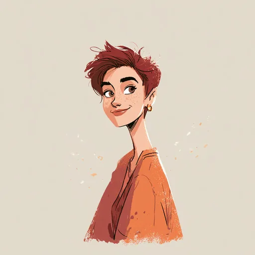

My husband would repeat to me, over and over, the following: "Opportunities that you aren't expecting will come, wait for them." He was right. MANY opportunities presented themselves to me when I was open to them.
I took a big risk and started a business with a business partner. Something I never dreamed I'd do. My partner ended up bailing after a while and I was panicked, but I kept going. I kept going and going and it worked out. I learned so much... invaluable teachings. I'd do it all over again. I was willing to take risks and that taught me so very much.
Now, I am a consultant in the field I am passionate about. I love my work and the team I work on and I get to "be myself". In the end, that's what really matters... being yourself. The self inside you, and only you, know is deep in there. Let it shine!